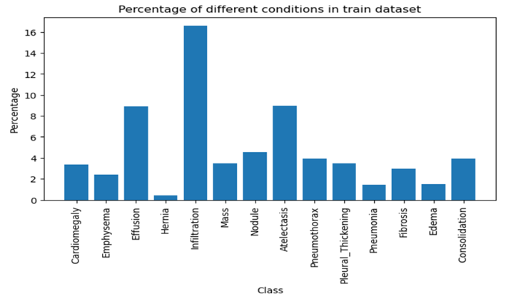
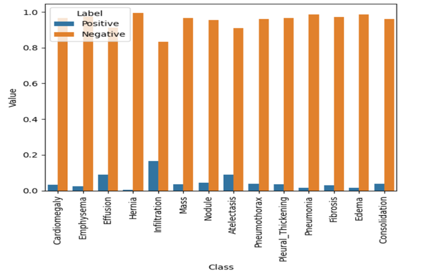
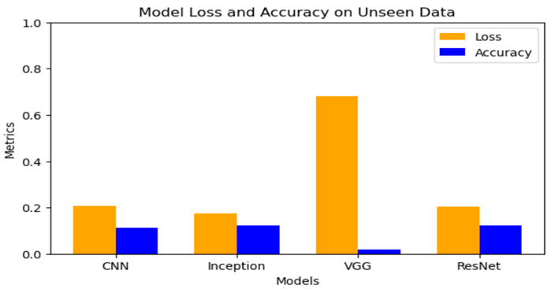
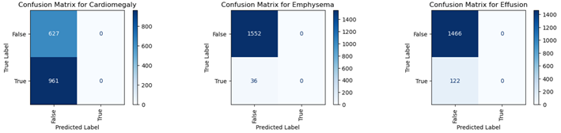
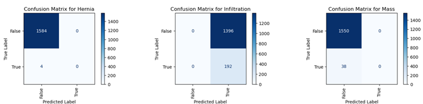
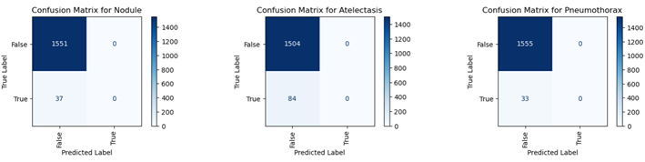
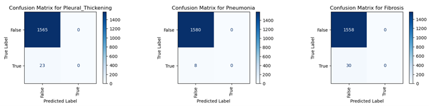
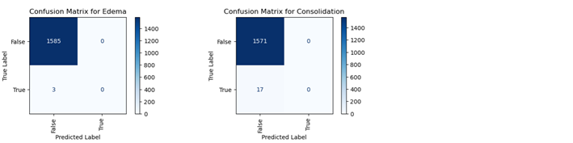

Research Content
1. Introduction
The research main goal is to create an image classification system using machine learning to help with the diagnosis of various diseases, including pneumonia, cardiomegaly, emphysema, diffusion, mass, and other conditions that are scanned on chest X-rays. Convolutional neural networks (CNNs) are utilized by the system to extract features, taking advantage of their capacity to capture spatial hierarchies of images by means of multiple convolutional and pooling layers. Using transfer learning, pre-trained models like VGG16, ResNet50, and InceptionV3 are compared and optimized for best performance alongside CNN architecture.
Deep learning is a subset of machine learning, which classify tasks across multiple domains have been transformed. Convolutional neural networks have become the standard architecture in medical diagnosis because of their capacity to extract features from images. Multiple layers of convolutional and pooling operations make up CNNs, which enable the network to recognize complex patterns of the images. Deep learning is especially useful for image recognition in ma-chine learning via different medium.
This statement according by Igor kononenko [1] that is “Medical datasets were the initial source of design and application for machine learning algorithms. These days, machine learning offers a number of essential instruments for astute data analysis. The digital revolution has made it relatively cheap and accessible to gather and store data, especially in the last few years. Large information systems collect and share data, and modern hospitals are well-equipped with monitoring and other data collection tools. Medical data analysis is currently a good fit for machine learning technology, and in particular, a lot of work has been done in the area of medical diagnosis in small, specialized diagnostic problems.”
Data preprocessing techniques, including image augmentation (rotation, scaling, flipping and colour adjustments) are applied to improve the robustness of the model. The model perfor-mance is evaluated using metrix like precision, f1-score, accuracy, recall, and confusion matrix, providing a comprehensive assessment of its effectiveness. CNN-based methods have various strategies to increase the performance of image classification on datasets,[2] one method is using in project is data augmentation via imageDataGenerator with configurations. Convolution neural networks are obtained by stacking one or more computational layers, The traditional transform-based data augmentation has better performance than generative adversarial net-work and other neural network-based methods. However, there are certain things that should be noted. [2] A limitation of Kermany’s research is that use the InceptionV3 model which is stop retrain the convolutional layer of InceptionV3 because of the overfitting. Therefore, we are implementing effects of retraining the convolutional layers on these models (convolutional neural network (CNN), VGG16, ResNet50 and InceptionV3) will be evaluated in this project. An examination of how the CNN transfer method performed on the small chest X-ray dataset to determine how data augmentation, network complexity, fine-tuned convolutional layer, and other prevent overfitting mechanisms affected the classification.
By integrating chest X-ray dataset, almost 11 million of X-ray images for multiple patients who have fourteen text-mined diseases image labels (where each image can have multiple labels). Atelectasis, Pneumothorax, Infiltration, Edema, Consolidation, Fibrosis, Emphysema, Effusion, Nodule, Pneumonia, Pleural thickening, Cardiomegaly, Mass, and Hernia are among the four-teen common diseases and all the models will be predicting multiple labels with data augmentation via the rotation range, scaling and other more configuration.
Deep learning needs a huge amount of data to get better result. Especially on medical problem to get and annotate the data is very important and time-consuming process. There are some solutions to solve the problem, one already little bit discuss on above is data augmentation which is prevent the overfitting and improves the accuracy on training data and another method for boosting the performance of in deep learning particularly CNNs which is named as transfer learning. So, in this project we will be utilize data augmentation method.
Here is the discussion on feature extraction using convolution, for all the models will be use IMAGE_SIZE variable (which represent the image pixels) which is [128,128] that will be used as input to standard feed-forward neural networks to solve image classification.
1.1 Background and Context
In this project, utilizing machine learning model convolutional neural Networks (CNNs) and pre trained models such as (InceptionV3, VGG16 and ResNet50) imageNet weights, excluding the top layers typically involves various components like weights, include top and input shape.
So, the study focuses on the use on convolutional neural networks, to improve image classification for chest X-ray used in medical diagnosis. CNNs is ability to precisely extract complex patterns and deep learning. This has helped to diagnosis the conditions like all the features. The research build data augmentation and deep learning to improve model performance, identify the challenges.
1.1.1 Problem Statement
For thoracic diseases to be effectively treated and patient outcomes to be improved, an early and accurate diagnosis is essential. The most widely used imaging technique for diagnosing diseases like Atelectasis, Consolidation, and Infiltration is a chest X-ray. Nevertheless, the inter-pretation of these images is difficult and frequently arbitrary, greatly depending on radiologists' experience. This may result in inconsistent diagnosis, particularly in settings with limited re-sources where skilled radiologists might not be available.
Radiologists are under a lot of pressure due to the growing number of chest X-rays that require analysis, which increases the risk of diagnostic mistakes and delays. Furthermore, a lot of thoracic diseases share similar visual features and symptoms, making it challenging to differentiate between them just by manual interpretation. This intricacy highlights the requirement for an automated, trustworthy instrument that can help with the precise categorization of thoracic diseases.
The goal of this project is to create a deep learning model that can use chest X-ray images to automatically classify a variety of thoracic diseases. With just one image, the model will be trained to distinguish between different conditions and produce multi-label predictions. The model can potentially outperform conventional diagnostic techniques by learning to recognize patterns and anomalies linked to specific diseases by utilizing extensive datasets like ChestX-ray. The implementation of this model aims to enhance diagnostic accuracy, reduce the work-load on radiologists, and improve the overall efficiency of the healthcare system.
1.1.2 Research Rationale
Is it possible to create a multi-label classification model using deep learning that can effectively identify and categorize various medical conditions from chest X-ray images, thereby enhancing diagnostic accuracy/precision and enhancing patient outcomes?
-
❖
to create a deep learning model that can identify various medical conditions from chest X-ray images.
-
❖
To assess the suggested model's effectiveness in terms of recall, accuracy, precision, F1-score, and confusion matrices.
-
❖
to assess how well the suggested model performs in comparison to current CAD (computer-aided diagnosis technology) systems and radiologists.
1.2 Scope and Objectives
Develop a robust and accurate deep learning model to automatically classify medical diseases from chest X-ray images. The model should be able to detect multiple diseases from a single X-ray image, providing a reliable tool that can assist medically diagnosing conditions such as Ate-lectasis, Consolidation, Infiltration, Pneumothorax, and other Hernia.
The robustness of the model refers to the ability to perform well across a variety of conditions, including noisy data, variation in image quality and different patient’s demographics. A model should generalize well to new, unseen data, mean it should make accurate predictions even on X-ray images that various from those in the training set. So, in medically diagnostics, precision is essential. To reduce false positives—identifying a disease when one is not present—and false negatives—failing to detect a disease when one is present the model needs to have high precision and recall rates.
In this case, models are not predicting well due to the dataset, because (generating training and validation data using the image data generator with augmentation and fit that training and validation dataset on models each epochs going to be overfitting), are all models giving the low accuracy on different neuron layers as well as rest of the metrics is not having best results.
Massive amounts of data are required for deep learning to produce dependable results. On the other hand, certain challenges might not have adequate data. Obtaining and annotating the data is an expensive and time-consuming operation, particularly for medical conditions. Thank-fully, there are a few ways to handle this issue. Among these is data augmentation, which increases accuracy and prevents overfitting [3]. The training time data augmentation strategy was applied in this work. Various augmentation techniques were employed, including shifting, zooming, flipping, and rotating at 32-degree angles. Some of images have labels which means having this disease and some have not label which is not any disease.
Image Augmentation Examples: The following three examples demonstrate the data augmentation techniques applied to chest X-ray images to improve model robustness and prevent overfitting.
For multi-disease detection from single X-ray image: this objective requires the models to han-dle cases where multiple diseases might be present simultaneously in a single X-ray image. For example, a patient could have Infiltration and Hernia, and model should correctly predict both conditions.
The Scope of the project will primarily be utilizing chest X-ray dataset which is a large collection of X-ray images labelled with 14 various diseases and added extra column “FilePath” in dataset for append path of the images in that column based on the Image Index column. I’m exploring the dataset to understand its structure, labels distribution, and image characteristics. This include identifying missing data or inconsistencies with the dataset.
Data Preprocessing: Splitting the dataset different training, validation and testing sets to ensure unbiased model evaluation. Apply a variety of augmentation technique (like rotation, sample wise standard normalization, shear range, width & height shift range, horizontal & vertical flip brightness range, rescale and fill model) to enhance training dataset, improving the model ability to generalize to unseen data.
1.3 Achievements
We evaluated four models by using deep learning convolutional layers, as defined the architecture of all models step by step in methodology. The deep learning models having capable of accurately classifying multiple thoracic diseases from chest x-ray images. Models effectively addresses complex challenges such as multi label classification, class imbalance and the high dimensionality of medical images. Implemented techniques such as class weighting, data augmentation and sample weighting, which ensured that the model performed well cross both common and rare thoracic diseases.
Performance of the models which is not well on training data because when we fit training dataset on model that is going overfit due to the dataset. The reason behind this for the identification of the label is 0 or 1. So, the most of the datapoint is 0 which mean no diseases at all, the datapoint is 1 mean have disease on that label. It could be the reason training data on the model is going to overfitting. Also is not evaluating well on unseen dataset.
Thus, the best model with the highest accuracy among the four models is displayed overall in this project. Showing the results for that best model which is accuracy, recall, F1-score, preci-sion and classification report as well which showing the result for label support. As well as showing the confusion metrices for all predicted labels and at the end deploy that model for integration.
1.4 Overview of Research
This project evaluates the x-ray image dataset using machine learning models, which are briefly described in the project methodology section and already mentioned in the introduction. This dissertation focuses on using deep learning models to classify images. Focusing on multi-label classification, where a single image may have several associated disease labels—is crucial. The following are crucial steps: understanding the data, building a model with hyperparameter tuning, enhancing and visualizing the data, and evaluating the performance of the model. Therefore, augmentation with different configurations such as range rotation, shear range, flipping, and others is used to prevent overfitting on the models.
I am writing this section for the overview of models. In this article, all predicted models adhered to the same format. Like how to construct the first method that searches for the optimal parameters across batches and epochs, another method searches for the optimal parameters across learning rate, initialization mode, activation for dense layers, and dropout rate for the optimizer. Thus, as I indicated, there are two ways to look for the ideal parameters for a given model. Prior to fitting the training data to the model, the best fit will be assigned to a particular model and that model will be predicted on unseen data. Subsequently, the model is fitted using training data, and a report on model history visualization is displayed. After fitting the model and displaying the Roc report for the same data before and after training, predict the model once more on unseen data. The same processes are then taken for the other models, until the best accuracy model is obtained. The classification report for that model is then displayed, along with the confusion metrics, before the model is saved and deployed for use. So, the conclusion of the overview is that building this project for multi labels classification in medical field. It will be overcome burden of radiologists.
2. State-of-The-Art
The goal of this project is to develop a deep learning system that can classify chest X-ray imag-es using multiple labels and identify several diseases from a single image. For example, deep learning model will identify the diseased image with the help of label which is one in dataset. Using various techniques for data understanding, data preparing, data augmenting, models building, fine-tuning hyperparameters, and assessing performance are all included in the methodology. Rotation, zoom, shear, channel shift range, brightness range, rescale, fill mode and flipping are examples of data augmentation techniques (we are using sample wise normal-ization for the training data augmentation and using feature wise normalization on validation and test data augmentation) that are used to enhance model robustness and avoid overfitting.
Before training the models, we are optimizing the best hyperparameter with using the random grid search technique, wrapping the model in kera’s classifier wrapper class then assign into random grid search function with the iterator and cross validation step. We have two methods for fine tuning of hyperparameter for models. One of the method tuning batch size and epochs and other method tuning optimizer, learning rate, init mode, activation and drop out rate with the behalf of batch size and epochs. So, this procedure is iterated over multiple models in order to determine which has the best accuracy. After that fitting train data generator on model, predict on unseen data and evaluate model on unseen data as well for getting the test accuracy and loss.
Finally, we have all models with the training results like test accuracy and loss, also Roc report as well before fitting and after the model on training generator. We are comparing all the mod-els with the based-on test accuracy and loss results and showing the model comparison graph. We are evaluating the model on unseen data having the higher accuracy, as well as measuring the matrix like recall, precision, F1 score and classification report. In the last, showing the con-fusion matrix for all predicted features with correctly and incorrectly prediction. Save the best model for deployment and integration for X-ray type application.
So, the conclusion of this project in the literature review, as per the above discussion we are building four models. The inception model is superior to other all models with higher accuracy.
So, the statement according to Yadav and Jadhav is that, [4] In order to improve the perfor-mance of image classification on small datasets, this research uses a variety of machine learning techniques, including methods based on convolutional neural networks and multiple strategies. One approach is data augmentation, which performs better than neural network- and generative adversarial network (GAN)-based techniques. Data augmentation is an alterna-tive to traditional transform-based methods. Transfer learning is an additional technique that, according to Kermany research, produced 92% accuracy on a small dataset of pneumonia X-ray images. But there are a few gaps that should be noted. One drawback of Kermany's work is that they employ the InceptionV3 model, but they don't retrain the InceptionV3 convolutional layer because of overfitting. Thus, this study will assess alternative models as well as the results of retraining the convolutional layer. Furthermore, did not contrast the capsule network's per-formance with that of other techniques. Thus, the following are the contributions of this report.
-
❖
Performance comparison of three distinct classification methods: training capsule network from scratch, transfer learning of VGG16 and InceptionV3, and SVM classifier with oriented fast and rotated binary robust independent elementary features (ORB).
-
❖
An examination of how the CNN transfer learning method performed on the small chest X-ray dataset to determine how data augmentation, network complexity, optimized convolutional layers, and other anti-overfitting mechanisms affected the classification.
“Medical image classification is a sub-field of image classification. It can also be applied with a variety of image classification techniques. For example, many image-enhanced techniques to improve the distinguishable characteristics for categorization. Convolutional neural network, however, is an end-to-end image classification solution, so it will learn the feature by own. Consequently, there will be no review of the literature regarding feature selection and enhancement in the medical image. The review primarily concentrates on the use of conventional techniques and transfer learning based on CNN. Additionally, on the capsule network in papers pertaining to medical images, to look into the gaps in their work and the aspects of those mod-els that are crucial to the outcome.”
So, the conclusion of this research, out of the three approaches, CNN-based transfer learning is the most effective. The capsule network is superior to the ORB and SVM classifier. In general, CNN based methods are better than traditional methods due to their ability to automatically learn and select features. The best results, slightly better than the state-of-the-art result, are obtained from the transfer learning of VGG16 with one retrained Convolutional Layer. The fea-ture can be learned from the new dataset using the unfrozen convolutional layer. As a result, the specific feature is crucial for increasing accuracy. A model's expressive power and overfit-ting must be balanced.
The statement according to D Zhang, F Ren, Y Li, L Na, Y Ma is that [5], Many techniques, es-pecially some deep learning techniques, have been described in the past year for the diagnosis of pneumonia from chest X-ray images. Thus, deep learning has been effectively used to en-hance the capabilities of computer-aided diagnosis (CAD), especially in the scope of medical imaging, image augmentation, and image reconstruction. In this research proposed a classical deep learning network named DenseNet-121, which has 121 convolutional layers. Compared to physicians with more experience, the framework received a higher F1 score. Additionally, the team introduced Weighted Binary Cross-Entropy loss to lessen the impact of imbalanced classes. The difference between the Binary Cross-Entropy loss and the weights of the imbal-anced classes was determined by the number of each label.
Several data pre-processing and augmentation techniques were applied, including random im-age translation and rotation in both horizontal and vertical directions, to increase the dataset's size and enhance the CNN model's representational ability. Baltruschat compared the perfor-mance of popular CNN models in classifying pneumonia X-ray images using the same hyper-parameter settings and image pre-processing methods in order to summarize the pneumonia classification task. The methodology proposed a two-channel CNN architecture. The first chan-nel processed the images whose contrast was increased by the CLAHE method, while the second channel processed the images whose edges were enhanced by the Canny method. Fol-lowing that, these images were used to train a multichannel CNN model to ascertain whether the patients had pneumonia.
D Zhang only predicted the one feature which label is pneumonia using the CNN based model. So, for the using to this model diagnose the pneumonia on a chest x-ray set. The following is a list of contributions made to this paper. To improve the contrast of the image, we first applied the Dynamic Histogram Equalization (DHE) technique. With this method, contrast in images can be improved without looking washed out or creating issues like checkerboard effects. Then, using only six layers that combined the ReLU activation function, drop operation, and max-pooling layers, we created a straightforward VGG-based CNN model to extract the fea-tures from the original images or earlier feature maps. The 96.07% accuracy rate and 94.41% precision rate that we were able to obtain demonstrate how well our suggested model outperforms the most advanced CNN model architectures. We included multiple comparisons of various input shapes and loss functions to show how well our suggested model performed.
3. Methodology
This deep learning project involving chest X-ray image classification using models such as (CNNs, VGG16, InceptionV3 and ResNet50), specifically targeting medical imaging data based on the disease labels. Here are dealing with several key components and methodologies, including data preprocessing, data augmentation, searching best parameters for models, models architecture definition, training process and performance evaluation.
I will be utilizing ‘NumPy’, ‘pandas’, ‘seaborn’ and matplotlib for data manipulation, analysis and visualization.
Importing various modules like ‘scikit-learn’ for model selection evaluation and preprocessing as well. ‘TensorFlow’ and ‘Keras’ for building and training deep learning models, imageDat-aGenerator for image augmentation and normalization.
For the model evaluation, utilizing matrices ROC-AUC, F1 score, precision, recall and confusion matrices to evaluate model performance.
3.1 Data Understanding
I have all the necessary data organized in one location, with a CSV file named ‘chest_X_ray_data’ and an accompanying images folder. The CSV file contains columns for the (Image Index, Patient ID, Atelectasis, Consolidation, Infiltration, Pneumothorax, Edema, Emphy-sema, Fibrosis, Effusion, Pneumonia, Pleural thickening, Cardiomegaly, Nodule, Mass and Hernia) labels, which will serve as features for evaluation except image index and patient id. I plan to enhance this data frame by adding a new column for the file path of each corresponding image index.
3.2 Data Preparation
Data preparation is the process of preparing data which is suitable for further processing and analysis on models. Key steps including collecting data, cleaning and extracting features which is suitable for machine learning algorithms:
-
❖
Loading the dataset from CSV file named 'chest_X_ray_data' from the directory. The nrows parameter is set to selected number of rows to read from the file. So, the resulting dataframe is stored in train_df_main.
-
❖
Drop the column named 'No Finding' fom train_df_main and extract all predicted labels which is use for image classification. Utilizing the 'Glob' library for getting the image file from directory so, the list of images path is stored in 'image_paths' variable
-
❖
Split the dataset in various part train_set, valid_set and test_set. The train_test_split function is used to split the data into training, validation and testing sets with a test size of 0.2. The 'random_state' parameter is set to RANDOM_STATE variable
-
❖
Added 'FilePath' column in all datasets based on the Image index because we have image name and image Index value is same in file and directory. Also remove the duplicate rows from split datasets
3.2.1 Data Augmentation
The process of artificially creating new data from preexisting data, known as data augmentation. Modern machine learning models are very powerful, so this is a crucial step in the dataset building process. If these models are given too small datasets, they may begin to "overfit," which is a problem where the models simply memorize the mappings between their inputs and expected outputs.
In the code I have two functions for data augmentation one ‘get_train_generator’ is giving augmented generator for training dataset, and other ‘get_test_and_valid_generator’ is giving augmented generator for validation and testing dataset. One of the most important thing, generating augmented data based on the flow_from_dataframe here is the couple of configuration where I’m using in ImageDataGenerator for training data
-
❖
samplewise_center = true: utilizing the center option each image by subtracting the mean pixel value from each pixel. So rather than doing this for whole dataset, it is done for each individual image.
-
❖
samplewise_std_normalization= true: utilizing this option for standardization of images is achieved by subtracting the mean pixel value and dividing the result by the standard deviation of the pixel values.
-
❖
rotation_range= 32: this parameter specifies the maximum rotation angle (in degrees) that will be applied. In this project I'm using maximum rotation angle is 32 degrees.
-
❖
shear_range= 0.1: parameter will apply random shear transformation on the images. So the maximum angle of radians that will be applied. Here the maximum shear angle is 0.1 radians.
-
❖
zoom_range= 0.15: parameter will apply random zoom transformation on the images. So the parameter specifies the maximum zoom factor that will be applied. In this case the maximum zoom factor is 0.15, which mean that the image will be zoomed in or out by up to 15%.
-
❖
width_shift_range=0.1: parameter specifies the maximum horizontal shift as a frac-tion of the image width that will be applied. In this case the maximum horizontal shift is 0.1 which mean that the image will be shifted by up to 10% width.
-
❖
height_shift_range=0.05: parameter specifies the maximum vertical shift as friction of the image height that will be applied. In this case the maximum vertical shift is 0.05, which mean that the image will be shifted by up to 5% height.
-
❖
rescale=1./255: So the rescale parameter specifies the scaling factor that will be ap-plied on the pixel values.
-
❖
brightness_range=(0.8, 1.2): this parameter specifies the minimum and maximum brightness multiplier that will be applied. In this case the brightness will be adjusted by a factor between 0.8 and 1.2.
-
❖
horizontal_flip=True: parameter applies a random horizontal flip to the images. If True, image will be flipped horizontally with a probability of 0.5.
-
❖
vertical_flip=False: this parameter applies a random vertical flip to the images. So, in the case vertical flipping is disabled.
-
❖
fill_mode=reflect: parameter mean image will be reflected at the boundary.
3.2.2 Data Visualization
Data visualization is the process of graphical representation of data, at this stage we have train, valid and test generator batch dataset with various configuration by image data generator. For the multi-classification of image that will be show single X-ray image having multiple diseases that will predict at the end of evaluation. So, this figure showing the labels on each image that will represent diseases on that X-ray image. For example, a patient could have Infiltration and Hernia, and model should correctly predict both conditions.
So, this image visualization develops a better understanding of the relationship between the images and their labels that can ultimately lead to better model performance and more accurate predictions.
This plot shows us how the prevalence of positive cases varies greatly amongst the various pathologies. (These trends also correspond with those found in the entire dataset.) We can see the label ‘Hernia’ has the greatest imbalance with the proportion of positive training cases being about 0.25%. Same as if we see the label ‘Infiltration’, which has the least amount of imbalance has only 17% of the training positive cases.

Figure 1: Percentage of Positive Labels
As we can see in the Figure 2, the contribution of the positive cases is significantly less than that of the negative cases in training dataset.

Figure 2: Percentage of Positive and Negative Labels
3.3 Model Building
Utilizing machine learning model convolutional neural Networks (CNNs) and pre trained models such as (InceptionV3, VGG16 and ResNet50) imageNet weights, excluding the top layers typically involves various components like weights, include top and input shape
3.3.1 Searching Best Parameters
Before fitting the model on the training and validation datasets, it's important to determine the best parameters using RandomizedSearchCV along with a Keras classifier. The following steps outline the process of finding the optimal parameters using this approach.
I created two methods for finding the best parameters on train generator dataset. The first method named (get_batch_parameter) feeding the model with default values in search the best batch size and epochs on one augmented batch which is default 32. Same as for the sec-ond searching method named (get_parameters_using_bacth) feeding the model with default values and batch size and epochs which got best from the first method. This method gives the best optimizer, learning rate, init mode, activation and dropout rate for that model.
We defined the array of all parameters and build dictionary for all parameters. Pass the keras model to random search class as well as grid search dictionary and iteration step with cross validation score.
3.3.2 Convolutional Neural Network (CNN) Architecture
I wrap this model in function having parameters with default values, and that parameters is using in function body:
Input Layer: Defined the sequential model then add the input layer with convolutional layer that has 64 filter, a 3*3 kernel size, and use the activation parameter with default value is relu and also add kernel initializer function with assign the default value of init_mode. So the input shape matches the size of the images, and padding is assign to same to preserve the spatial dimensions.
Conv2D Layers: Convolutional layers with 32, 64, and 128 filters are gradually added by the model. These layers capture various level of features, so from the low level features like edges and textures in earlier layers to more complex patterns in deeper layers.
MaxPooling2D Layers: Pooling layers follow every set of convolutional layers, which overcomes the spatial dimensions and helping to generalize the learned features. This down sampling overcomes the computational load and helps prevent overfitting.
Dropout Layers: After every pooling layer, set the dropout layer with the parameter drop-out_rate default value is 0.5 where randomly deactivate neurons during training time, which is also help to overcomes overfitting.
Fully Connected Layer: The fully connected layer begins by flattening the output from the last convolutional layer into a one-dimensional vector. A dense layer with 1024 units and default ReLU activation follows, enabling the model to learn complex patterns from the extracted features. To mitigate overfitting, a dropout layer with a specified rate is applied after this dense layer. The output layer, designed for multi-label classification, has units equal to the number of labels and uses a sigmoid default activation function to generate probability scores for each label.
Compilation: For the CNN model compilation, binary_crossentropy is employed as the loss function, suitable for independent label predictions, with default Adam as the optimizer set to a 0.01 default learning rate, and accuracy as the metric to evaluate performance.
3.3.3 Pre-Trained Models Architecture
In this project we are using three pre-trained models which is (RESNET50, VGG16 and InceptionV3) these models having the same architecture except base layer. Every model wrapped in the individual function with parameters having default values, thus these default values are using at the time of best parameters searching. Every model will reinitialize after finding the best parameter values and then that values will be feed to specific model. Now defining the layers that will be common in for every models.
Input Layer: defined the input layer with the shape of image size is 128*128 and colour channel is 3 (which is in the RGB).
Base Model: Defined the pre-trained model architecture, which is exclude the fully connected layers at the top of the model network, keeping only the convolutional base layer. Also initializ-es the base model with pre trained weights with ImageNet dataset. So, at the end of this layer using inputs which is defined in the previous step.
Freezing Base Layer: Freez the layers of the base model which is prevent from being updated during training. This layer only to allow the model to use the pre-trained features.
Dense and Dropout Layers: dense layers are fully connected that help the model to learn on complex patterns. So, for the dense layer filters are gradually added in convolutional layers which is 64, 128 and 512, and for the output connected convolutional layers is 1024. Dropout rate is defined in parameter which is 0.5.
Fully Connected Layer: the first layer is flattening the output of the previous layer into a one-dimensional vector. So the forth layer as mentioned in connected layer is dense with the filter is 1024. Also added the dropout rate layer with default value of dropout_rate parameter. Add the next layer is dense with the units are equal to the length of the predicted labels with searched activation function.
Compilation: In the model compilation, utilizing the ‘binary_crossentropy’ loss which is suitable for multi-label classification where each label is treated independently. For the model default optimizer function using Adam with the default learning rate is 0.01. Next, last and third parameter is metrics which is accuracy to evaluate the model performance.
I'm writing for the definition of each of the models. To find the best parameters, I first assign the model to the Kera’s classifier using default values, as I previously discussed in the model architecture. Subsequently, the parameter values will be assigned to the respective model, and the model summary will be displayed in support of the optimal parameter values. Next, before fitting the model, make predictions about unseen data. Run the model fit on a data generator for both training and validation. We will obtain the historical data on model fitting in order to display the loss and accuracy graph visualization. Next, test the model on hypothetical data to determine its accuracy and loss, then store the name of a particular model variable to deter-mine which model performs the best. After fitting the training data, predict the model on unseen data once more. The ROC report for that particular model will then be displayed. The same process is implemented on all models.
3.4 Model Evaluation
In the phase of the model evaluation, we rank the highest performing model according to accuracy. As previously mentioned, we store the accuracy and loss of each model in the corresponding model variables, create a new array based on the model’s variables and display visualization graph for all models.

Figure 3: Models Comparison
Finally, the best model based on the accuracy which is the InceptionV3 with 12% accuracy. Predicting that model on unseen data and getting the metrices like accuracy, F1-score, recall, precision, classification report as well. We describe according to the best outputs of model, True Positive, True Negative, False Positive and False Negative are used to analyze and identify the performance of the model.
Accuracy:
$$accuracy = \frac{TP + TN}{TP + TN + FP + FN}$$
Precision:
$$precision = \frac{TP}{TP + FP}$$
Recall:
$$recall = \frac{TP}{FP + FN}$$
F1 Score:
$$F1 = 2 \times \frac{precision}{precision + recall}$$
Also showing the confusion metric for all the predicted labels for the InceptionV3 model. So, the confusion matrix is a performance measurement for machine learning classification problem, particularly for binary classification. We have confusion matrix for each individual label.
-
❖
True Negative cases where the condition was correctly predicted.
-
❖
False Positive cases where the condition was incorrectly predicted.
-
❖
False Negative cases where the condition was incorrectly predicted.
-
❖
True Positive cases where the condition was correctly predicted.





Figure 4: Confusion Matrices
3.5 Deployment
In the deployment phase, the best-performing model, identified as InceptionV3 with the highest accuracy, is saved for future use. This model is prepared for integration into a production environment where it can be utilized for real-time chest X-ray image classification. The deployment process includes finalizing the model's architecture, ensuring that it can efficiently handle unseen data, and exporting it in a format compatible with deployment platforms. The deployed model is expected to aid in medical diagnostics by accurately predicting multiple diseases from chest X-ray images.
4. Conclusion
4.1 Summary of Findings
This project focuses on the multi-label classification of chest X-ray images using deep learning models, aiming to predict multiple diseases from a single image. The methodology involves several key steps, including understanding the data, preparation of the data, data augmentation, model building with hyperparameter tuning, and performance evaluation. Data augmentation techniques like rotation, shear, and flipping are employed to prevent overfitting and enhance model robustness.
The dissertation outlines a systematic approach to finding the optimal hyperparameters for the models. Two methods are used: one for searching the best parameters across batches and epochs, and another for tuning learning rates, initialization modes, activation functions, and dropout rates. Once the best parameters are identified, they are applied to the models, which are then trained on the data. After training, the models are evaluated on unseen data, and performance is visualized through metrics like ROC curves.
The process is repeated across different models, with the goal of identifying the model that achieves the highest accuracy. The best-performing model is then subjected to further evalua-tion, including the generation of confusion matrices, F1-score, recall, precision and classification reports. Finally, this model is saved and prepared for deployment, where it can be utilized to assist radiologists by automating the detection of multiple diseases from chest X-rays, thereby reducing their workload and improving diagnostic efficiency.
4.2 Evaluation
The objective of this project was to develop a robust and accurate deep learning models capabilities of classifying multiple diseases from chest X-ray images. The model aimed to assist in the medical diagnosis of conditions such as Atelectasis, Consolidation, Infiltration, Pneumothorax, Edema, Emphysema, Fibrosis, Effusion, Pneumonia, Pleural thickening, Cardiomegaly, Nodule, Mass and Hernia, even in the presence of unseen data, varying image quality, and diverse patient demographics. The project assessed four deep learning models for the classification of several thoracic diseases from chest X-ray images. The model low accuracy and performance metrics across various neuron layers were caused by overfitting, despite the fact that it was intended to reduce false positives and negatives and improve generalization.
4.3 Future Work
The limitations that I have faced during the project is the model performance on training data as I mentioned earlier in achievements section, when I fit the training and validation generator data on model that is going to be overfitting during the training process due to the dataset. right now, getting the image file path from dataset, but for the improving next will get direct from the directory when generating the data via augmentation process. For improving the model performance create the folder with the name of label and furthermore will create test and train folder in every label sub directory, put the images there will use that directory for the time of data augmentation which will give the training generator and test generator. After that will use that generator dataset for the searching best parameters and model fitting.
The next step that I have to improve getting the best parameters via Random search, for now when we search best param’s for specific model, we are fitting the first batch on grid search because if we pass all the batches or generated dataset in the grid search it takes lots of time in searching and sometime giving the error due to the memory pressure (the error is out of the range or by a memory leak).
References
The following references represent key contributions to the field of image classification and computer vision:
- Krizhevsky, A., Sutskever, I., & Hinton, G. E. (2012). ImageNet classification with deep convolutional neural networks. Advances in neural information processing systems, 25.
- He, K., Zhang, X., Ren, S., & Sun, J. (2016). Deep residual learning for image recognition. Proceedings of the IEEE conference on computer vision and pattern recognition, 770-778.
- Dosovitskiy, A., Beyer, L., Kolesnikov, A., Weissenborn, D., Zhai, X., Unterthiner, T., ... & Houlsby, N. (2020). An image is worth 16x16 words: Transformers for image recognition at scale. arXiv preprint arXiv:2010.11929.
- Simonyan, K., & Zisserman, A. (2014). Very deep convolutional networks for large-scale image recognition. arXiv preprint arXiv:1409.1556.
- Tan, M., & Le, Q. (2019). EfficientNet: Rethinking model scaling for convolutional neural networks. International conference on machine learning, 6105-6114.
Note: This is a representative selection of references. The complete bibliography contains additional sources covering theoretical foundations, methodological approaches, and recent advances in image classification research.
Appendices
Appendix A: Technical Implementation Details
This section provides detailed implementation specifications, including hyperparameter configurations, training procedures, and computational requirements for reproducing the experimental results.
Appendix B: Additional Experimental Results
Supplementary experimental data, extended performance metrics, and detailed statistical analyses supporting the main findings of the research.
Appendix C: Code Repository
Links to publicly available code repositories containing implementation details, trained models, and experimental scripts for research reproducibility.